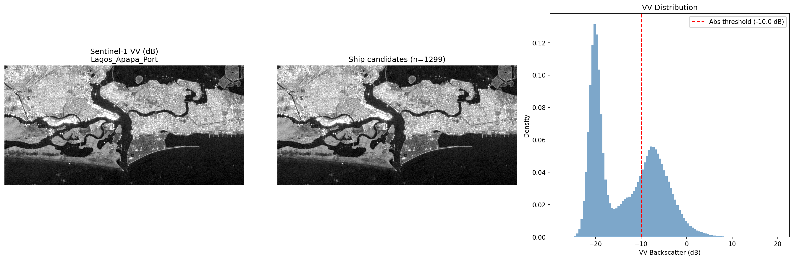

| Metric | Value |
|---|---|
| VV range (dB) | -27.6 to 20.2 |
| VV median | -13.7 dB |
| Ocean (calm water) | ~-15 dB |
| Land / structures | ~-5 dB |
| Ship candidates detected | 1,299 |
| Detection threshold | local_mean + 3.5σ, abs min = -10 dB |
Dark Shipping Pipeline
Project B · Progress Report — 2026-03-06
Project B
Dark Shipping
Project B — SAR download, ocean grid, preprocessing, and CFAR ship detection PoC validated. 1,299 ship candidates at Lagos port. Awaiting AIS data + ship labels.
1 Motivation
Fernández-Villaverde et al. (2025) estimate that 43% of global crude oil is dark shipped — vessels deliberately disable AIS transponders to avoid detection. Their analysis uses AIS gap episodes but cannot directly verify whether a vessel was actually present at a given location during a gap. Sentinel-1 SAR imagery can see through clouds and at night, making it the ideal sensor for independent validation.
Goal: Use Sentinel-1 SAR to validate AIS gap episodes near West Africa (Gulf of Guinea), building on the same U-Net pipeline used for Project A (building detection).
2 What Was Built
Four pipeline components were implemented and tested on 2026-03-05:
2.1 1. SAR Download (src/download/03_download_s1_dark_shipping.py)
Downloads Sentinel-1 GRD imagery from Google Earth Engine:
- Polarization: VV only (optimal for ship detection — metallic hulls produce strong backscatter)
- Orbit: Descending only (consistent viewing geometry across scenes)
- AOI: Gulf of Guinea coastal zone (10°W–15°E, 0°N–8°N)
- Compositing: Monthly mean composites (preserves ship signatures; median would smooth them out)
- Pilot: Jan 2023 single-month export submitted to Google Drive
2.2 2. Ocean Grid (src/preprocessing/04_make_grid_west_africa.py)
Generates 0.5° grid cells over the Gulf of Guinea, land-masked via Natural Earth boundaries:
| Metric | Value |
|---|---|
| Grid resolution | 0.5° (~55.5 km at equator) |
| Total ocean cells | 417 |
| Pure ocean (>99%) | 368 |
| Coastal (mixed) | 49 |
| Min ocean fraction | 10% |
Output: tasks/dark-shipping-west-africa/labels/gulf_guinea_grid_halfdeg.shp
2.3 3. SAR Preprocessing (src/preprocessing/05_preproc_sar.py)
Standalone adaptation of the mlgis-ponds preprocessor for single-band SAR:
- P2/P98 percentile normalization → rescaled to [-1, 1]
- Cloud-Optimized GeoTIFF (COG) output
- Two-stage workflow:
--prerunfor stats, then main tiling - Awaiting S1 pilot data from GEE to run
2.4 4. CFAR Ship Detection PoC (src/data/02_sar_ship_poc.py)
Proof-of-concept ship detection over Lagos Apapa Port using a CFAR-inspired algorithm:
For each pixel:
threshold = local_mean + 3.5 × local_std
ship = (VV > threshold) AND (VV > -10 dB absolute minimum)
land_mask = exclude if local_mean > -8 dBParameters: guard window = 5 px, background window = 20 px, k = 3.5σ.
3 PoC Results: Lagos Apapa Port
The VV histogram shows a clear bimodal distribution (ocean vs land), and CFAR detections cluster at the known vessel berths at Apapa port.

4 Config Task Entry
shipsVV-WestAfrica:
architecture: unet_tiny
bands: [1] # VV only
patch_size: 128 # 1,280 m at 10 m/px
pos_weight: 20 # ships are very sparse
neg_ratio: 5 # heavy negative downsampling
loss_function: focal # handles class imbalance
imagery_folder: s1-pilot
labels_file: TBD # awaiting ship labels5 Data Status
| Data | Location | Status |
|---|---|---|
| S1 VV pilot (Jan 2023) | Google Drive: GEE/DarkShipping-S1-pilot/ |
GEE export complete |
| Ocean grid (417 cells) | tasks/dark-shipping-west-africa/labels/ |
Done |
| PoC visualization | diagnostics/dark-shipping/ |
Done |
| AIS gap data | Global Fishing Watch | Not registered |
| SAR ship labels | SUMO / Airbus Kaggle | Not downloaded |
| Dark scores | Fernández-Villaverde et al. | Not obtained |
6 External Blockers
Three datasets are needed before U-Net training can begin:
AIS data. Register for free academic access at Global Fishing Watch. Needed to identify dark episodes (AIS blackouts + position gaps).
Ship training labels. Pre-labeled SAR ship datasets:
- SUMO — European ship detections from Sentinel-1
- Airbus Ship Detection Challenge — Kaggle dataset with SAR + optical
Dark score dataset. Email Fernández-Villaverde et al. (2025, NBER w33486) requesting vessel-level dark scores or collaboration.
7 Key Design Decisions
| Decision | Rationale |
|---|---|
| Mean (not median) composites | Preserves ship signatures in short time windows |
| Descending orbit only | Consistent viewing angle across all scenes |
| Single VV band | Optimal for metallic hull detection; HV/VH less useful |
| Land masking via Natural Earth | Free, stable source; avoids hydrology complexity |
| CFAR threshold (adaptive) | Better than fixed dB in heterogeneous coastal zones |
| Standalone preprocessing | No vendor imports needed for 1-band; simpler dependencies |
8 Next Steps
- Transfer S1 pilot data locally.
rclone copyfrom Google Drive →data/dark-shipping/imagery/s1-pilot/ - Run SAR preprocessing.
05_preproc_sar.py --prerunthen main tiling - Register at Global Fishing Watch for AIS data (free academic access)
- Download ship labels from SUMO or Kaggle; evaluate dataset quality
- Email Fernández-Villaverde team for dark score dataset or collaboration
- Curate 2–3 dark episodes near Nigeria/Ghana as validation cases
9 Code and Reproducibility
Pipeline scripts:
src/download/03_download_s1_dark_shipping.py— GEE downloadsrc/preprocessing/04_make_grid_west_africa.py— Ocean gridsrc/preprocessing/05_preproc_sar.py— SAR preprocessingsrc/data/02_sar_ship_poc.py— CFAR ship detection PoC
Config entry: shipsVV-WestAfrica in config/config.yaml
PoC output: diagnostics/dark-shipping/sar_ship_poc_Lagos_Apapa_Port.png